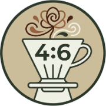

<!DOCTYPE html>
<html lang="zh-TW">

<head>
    <meta charset="UTF-8">
    <meta name="viewport" content="width=device-width, initial-scale=1.0">
    <title>手沖職人指南 - 四六沖法 + 花朵繞法</title>
    <link rel="icon" type="image/png" href="favicon.png">
    <link rel="apple-touch-icon" href="favicon.png">
    <!-- 載入外部資源 -->
    <script src="https://unpkg.com/react@18/umd/react.production.min.js"></script>
    <script src="https://unpkg.com/react-dom@18/umd/react-dom.production.min.js"></script>
    <script src="https://unpkg.com/@babel/standalone/babel.min.js"></script>
    <script src="https://cdn.tailwindcss.com"></script>
    <link rel="preconnect" href="https://fonts.googleapis.com">
    <link rel="preconnect" href="https://fonts.gstatic.com" crossorigin>
    <link
        href="https://fonts.googleapis.com/css2?family=Noto+Sans+TC:wght@400;500;700;900&family=JetBrains+Mono:wght@700&display=swap"
        rel="stylesheet">
    <style>
        :root {
            --shadow: 0 8px 30px rgba(0, 0, 0, 0.08);
            --transition: 0.3s cubic-bezier(0.4, 0, 0.2, 1);
        }

        body {
            font-family: 'Noto Sans TC', sans-serif;
            line-height: 1.7;
        }

        .yooneko-shadow {
            box-shadow: var(--shadow) !important;
        }

        .font-mono {
            font-family: 'JetBrains+Mono', monospace;
        }

        .animate-pulse {
            animation: pulse 2s cubic-bezier(0.4, 0, 0.6, 1) infinite;
        }

        @keyframes pulse {

            0%,
            100% {
                opacity: 1;
            }

            50% {
                opacity: .5;
            }
        }

        .animate-bounce {
            animation: bounce 1s infinite;
        }

        @keyframes bounce {

            0%,
            100% {
                transform: translateY(-5%);
                animation-timing-function: cubic-bezier(0.8, 0, 1, 1);
            }

            50% {
                transform: none;
                animation-timing-function: cubic-bezier(0, 0, 0.2, 1);
            }
        }

        @keyframes fadeIn {
            from {
                opacity: 0;
                transform: translateY(-5px);
            }

            to {
                opacity: 1;
                transform: translateY(0);
            }
        }
    </style>
</head>

<body>
    <div id="root"></div>

    <script type="text/babel">
        const { useState, useEffect, useRef } = React;

        // 自定義 SVG 圖示組件，修正了相鄰元素未包裹的語法錯誤
        const Icon = ({ name, size = 24, className = "" }) => {
            const icons = {
                coffee: <path d="M17 8h1a4 4 0 1 1 0 8h-1M3 8h14v9a4 4 0 0 1-4 4H7a4 4 0 0 1-4-4Z M6 2v2 M10 2v2 M14 2v2" />,
                play: <polygon points="5 3 19 12 5 21 5 3" />,
                pause: (
                    <React.Fragment>
                        <rect x="6" y="4" width="4" height="16" />
                        <rect x="14" y="4" width="4" height="16" />
                    </React.Fragment>
                ),
                "rotate-ccw": <path d="M3 12a9 9 0 1 0 9-9 9.75 9.75 0 0 0-6.74 2.74L3 8 M3 3v5h5" />,
                info: (
                    <React.Fragment>
                        <circle cx="12" cy="12" r="10" />
                        <path d="M12 16v-4M12 8h.01" />
                    </React.Fragment>
                ),
                "arrow-down-circle": (
                    <React.Fragment>
                        <circle cx="12" cy="12" r="10" />
                        <path d="M12 8v8M8 12l4 4 4-4" />
                    </React.Fragment>
                )
            };

            return (
                <svg
                    width={size}
                    height={size}
                    viewBox="0 0 24 24"
                    fill="none"
                    stroke="currentColor"
                    strokeWidth="2"
                    strokeLinecap="round"
                    strokeLinejoin="round"
                    className={className}
                >
                    {icons[name]}
                </svg>
            );
        };

        const PouringDiagram = ({ type, isActive }) => {
            const activeColor = "#d97706";
            const inactiveColor = "#e7e5e4";

            const generateFlowerPath = (cx, cy, R, petals, strength) => {
                let points = [];
                for (let i = 0; i <= 360; i += 1) {
                    const angle = (i * Math.PI) / 180;
                    const x = cx + R * Math.cos(angle) + strength * Math.cos(petals * angle);
                    const y = cy + R * Math.sin(angle) + strength * Math.sin(petals * angle);
                    points.push(`${i === 0 ? 'M' : 'L'} ${x} ${y}`);
                }
                return points.join(' ') + ' Z';
            };

            const renderPath = () => {
                switch (type) {
                    case 'center-to-circle':
                        return (
                            <g>
                                <circle cx="50" cy="50" r="4" fill={activeColor} className={isActive ? "animate-pulse" : "opacity-20"} />
                                <circle cx="50" cy="50" r="32" fill="none" stroke={isActive ? activeColor : inactiveColor} strokeWidth="2.5" strokeDasharray="200" style={{ strokeDashoffset: isActive ? "0" : "200", transition: "stroke-dashoffset 3000ms ease-in-out, stroke 500ms" }} />
                                <path d="M 50 10 V 46" stroke={isActive ? activeColor : inactiveColor} strokeWidth="1.5" strokeLinecap="round" className={isActive ? "animate-bounce" : "opacity-20"} />
                                {isActive && (
                                    <circle r="3" fill={activeColor}>
                                        <animateMotion path="M 50 18 A 32 32 0 1 1 49.9 18" dur="3s" repeatCount="indefinite" />
                                    </circle>
                                )}
                            </g>
                        );
                    case 'center-only':
                        return (
                            <g>
                                <circle cx="50" cy="50" r="6" fill="none" stroke={isActive ? activeColor : inactiveColor} strokeWidth="3" strokeDasharray="40" style={{ strokeDashoffset: isActive ? "0" : "40", transition: "stroke-dashoffset 1000ms ease-out, stroke 500ms" }} />
                                {isActive && <circle r="2" fill={activeColor}><animateMotion path="M 50 44 A 6 6 0 1 1 49.9 44" dur="1.2s" repeatCount="indefinite" /></circle>}
                                <circle cx="50" cy="50" r="1.5" fill={activeColor} className={isActive ? "animate-pulse" : "opacity-20"} />
                                <path d="M 50 15 V 45" stroke={activeColor} strokeWidth="1.5" strokeLinecap="round" className={isActive ? "animate-bounce" : "opacity-20"} />
                            </g>
                        );
                    case 'petal-to-center':
                        return (
                            <g>
                                <path d={generateFlowerPath(50, 50, 28, 8, 8)} fill="none" stroke={isActive ? activeColor : inactiveColor} strokeWidth="2" strokeDasharray="600" style={{ strokeDashoffset: isActive ? "0" : "600", transition: "stroke-dashoffset 4000ms linear, stroke 500ms", opacity: isActive ? 1 : 0.1 }} />
                                <circle cx="50" cy="50" r="6" fill="none" stroke={isActive ? activeColor : inactiveColor} strokeWidth="2" />
                                {isActive && <circle r="2" fill={activeColor}><animateMotion path="M 50 44 A 6 6 0 1 1 49.9 44" dur="1.5s" repeatCount="indefinite" /></circle>}
                                <circle cx="50" cy="50" r="1.5" fill={activeColor} className={isActive ? "animate-pulse" : "opacity-20"} />
                            </g>
                        );
                    case 'turbulence':
                        return (
                            <g>
                                <path d="M 50 10 V 46" stroke={isActive ? activeColor : inactiveColor} strokeWidth="5" strokeLinecap="round" className={isActive ? "animate-bounce" : "opacity-20"} />
                                <g className={isActive ? "animate-[spin_2s_linear_infinite]" : ""} style={{ transformOrigin: 'center' }}>
                                    <path d="M 30 30 Q 50 10 70 30 T 70 70 T 30 70 T 30 30" fill="none" stroke={activeColor} strokeWidth="3" strokeLinecap="round" className={isActive ? "" : "opacity-10"} />
                                    <circle cx="50" cy="50" r="5" fill={activeColor} />
                                </g>
                            </g>
                        );
                    default: return null;
                }
            };

            return (
                <div className="w-16 h-16 md:w-20 md:h-20 bg-stone-100 rounded-full flex items-center justify-center shrink-0 border border-stone-200 shadow-inner overflow-hidden">
                    <svg viewBox="0 0 100 100" className="w-full h-full">
                        <circle cx="50" cy="50" r="45" fill="none" stroke="#f5f5f4" strokeWidth="1" />
                        {renderPath()}
                    </svg>
                </div>
            );
        };

        function App() {
            const [target, setTarget] = useState('300');
            const [seconds, setSeconds] = useState(0);
            const [isActive, setIsActive] = useState(false);
            const timerIntervalRef = useRef(null);
            const stageRefs = useRef([]);

            const brewData = {
                '300': { powder: '20g', totalWater: 300, perStage: 60, range: { min: 45, max: 75 } },
                '600': { powder: '35g', totalWater: 600, perStage: 120, range: { min: 90, max: 150 } }
            };

            const current = brewData[target];

            useEffect(() => {
                if (isActive) {
                    timerIntervalRef.current = setInterval(() => setSeconds(s => s + 1), 1000);
                } else {
                    clearInterval(timerIntervalRef.current);
                }
                return () => clearInterval(timerIntervalRef.current);
            }, [isActive]);

            const toggleTimer = () => {
                const isFinished = isActive && seconds > 225; // Check current finish state
                if (isFinished) {
                    resetTimer();
                } else {
                    setIsActive(!isActive);
                }
            };
            const resetTimer = () => {
                setIsActive(false);
                setSeconds(0);
                window.scrollTo({ top: 0, behavior: 'smooth' });
            };

            const formatTime = (secs) => {
                const m = Math.floor(secs / 60);
                const s = (secs % 60).toString().padStart(2, '0');
                return `${m}:${s}`;
            };

            const isFinished = isActive && seconds > 225; // 45 * 5 = 225s
            const currentStageIdx = isFinished ? 4 : Math.min(Math.floor(seconds / 45), 4);

            useEffect(() => {
                if (isActive && stageRefs.current[currentStageIdx]) {
                    const scrollTimer = setTimeout(() => {
                        const offset = 160;
                        const element = stageRefs.current[currentStageIdx];
                        const elementPosition = element.getBoundingClientRect().top + window.pageYOffset;
                        window.scrollTo({ top: elementPosition - offset, behavior: 'smooth' });
                    }, 300);
                    return () => clearTimeout(scrollTimer);
                }
            }, [currentStageIdx, isActive]);

            const stages = [
                { title: "第一等分：風味定調", time: "0:00 - 0:45", method: "從中間建立水道，濾紙開始滴水後向外繞濕一圈回中心", detail: `標準：${current.perStage}ml (±25%)`, effect: "多酸、少甜", diag: 'center-to-circle', cheer: "好的開始！讓咖啡粉盡情呼吸吧，這會為整杯咖啡打下美味的基礎。" },
                { title: "第二等分：建立主體", time: "0:45 - 1:30", method: "持續從中間繞五元硬幣大小注水，時間內注滿 2/5 的水量", detail: `累計：${current.perStage * 2}ml`, effect: "萃取核心風味", diag: 'center-only', cheer: "很棒！現在正在萃取最迷人的香氣與甜感，保持穩定的節奏哦。" },
                { title: "第三等分：延伸層次", time: "1:30 - 2:15", method: "開始從外圈花瓣式繞一圈後，再回歸中間繞五元硬幣注水", detail: `累計：${current.perStage * 3}ml`, effect: "增加風味寬度", diag: 'petal-to-center', cheer: "花朵繞法能讓邊緣的粉層也參與萃取，風味層次會更豐富呢！" },
                { title: "第四等分：深度萃取", time: "2:15 - 3:00", method: "再次從外圈花瓣式繞一圈後，再回歸中間繞五元硬幣注水", detail: `累計：${current.perStage * 4}ml`, effect: "提取厚實口感", diag: 'petal-to-center', cheer: "就快完成囉！這一段注水會把咖啡醇厚的口感完美釋放出來。" },
                { title: "第五等分：動力對流", time: "3:00 - 3:45", method: "大水從中間注水帶起粉對流，然後四處繞圈", detail: `累計：${current.totalWater}ml`, effect: "均勻收尾，平衡濃度", diag: 'turbulence', cheer: "最後的衝刺！大水流帶起對流，讓整杯咖啡的濃度達到完美平衡。" }
            ];

            return (
                <div className="min-h-screen bg-stone-50 font-sans text-stone-800 antialiased">
                    <div className="max-w-2xl mx-auto bg-white yooneko-shadow min-h-screen border-x border-stone-200 relative">

                        <div className={`transition-all duration-500 ease-in-out ${isActive ? 'sticky top-0 z-50 p-2 md:p-4' : 'relative p-0'}`}>
                            <div className={`bg-stone-800 text-stone-50 yooneko-shadow transition-all duration-500 overflow-hidden ${isActive ? 'rounded-2xl p-4 md:px-8 bg-stone-800/95 backdrop-blur-md border border-stone-700' : 'p-6 md:p-10 rounded-none'
                                }`}>
                                <div className={`flex justify-between items-start transition-all duration-500 ${isActive ? 'h-0 opacity-0 mb-0 scale-95 pointer-events-none' : 'h-auto opacity-100 mb-8'}`}>
                                    <div className="flex-1 pr-4">
                                        <h1 className="text-3xl md:text-4xl font-black tracking-tight text-white flex items-center gap-3">
                                            手沖職人指南
                                        </h1>
                                        <p className="text-stone-400 text-sm mt-1 italic font-light">四六沖法 + 花朵繞法</p>
                                        <div className="mt-4 space-y-3 border-l-2 border-amber-600/50 pl-3">
                                            <p className="text-xs sm:text-sm leading-relaxed text-stone-300">
                                                將注水分成五段，每段週期固定為 <span className="text-amber-500 font-bold">45 秒</span> 流乾。
                                            </p>
                                            <div className="flex flex-col gap-1.5 text-xs sm:text-sm text-stone-400 pt-1">
                                                <span className="flex items-center gap-1.5"><span className="w-1.5 h-1.5 rounded-full bg-amber-500 shrink-0" /><strong className="text-stone-200">前兩段 (40%) 決定風味：</strong> 控酸甜平衡</span>
                                                <span className="flex items-center gap-1.5"><span className="w-1.5 h-1.5 rounded-full bg-amber-500 shrink-0" /><strong className="text-stone-200">後三段 (60%) 決定濃度：</strong> 定口感厚度</span>
                                            </div>
                                            <div className="bg-stone-900/40 p-3 rounded-2xl border border-stone-700/50">
                                                <p className="text-xs sm:text-sm text-amber-500/90 font-bold flex items-center gap-1.5 mb-1"><Icon name="arrow-down-circle" size={14} /> 研磨調整建議</p>
                                                <p className="text-xs sm:text-sm font-medium text-stone-300 tracking-wide">若積水可調粗，流太快可調細一點哦。</p>
                                            </div>
                                        </div>
                                    </div>
                                    
                                </div>

                                {!isActive && (
                                    <div className="flex bg-stone-900/50 p-1.5 rounded-2xl border border-stone-700 mb-8">
                                        {Object.keys(brewData).map(key => (
                                            <button key={key} onClick={() => { setTarget(key); setSeconds(0); }} className={`flex-1 py-2.5 sm:py-2 rounded-2xl text-xs sm:text-[10px] font-black transition-all ${target === key ? 'bg-amber-600 text-white shadow-lg' : 'text-stone-500 hover:text-stone-300'}`}>
                                                {brewData[key].powder} / {brewData[key].totalWater}ml
                                            </button>
                                        ))}
                                    </div>
                                )}

                                <div className={`flex items-center justify-between transition-all duration-500 ${isActive ? 'gap-4' : 'flex-row gap-2 sm:gap-6'}`}>
                                    <div className={`flex items-center transition-all duration-500 ${isActive ? 'gap-4' : 'flex-1 flex-col items-start gap-0.5'}`}>
                                        {isActive && <div className="w-2 h-2 rounded-full bg-amber-500 animate-pulse hidden sm:block" />}
                                        <div className="flex flex-col">
                                            {!isActive && <span className="text-[9px] sm:text-[10px] uppercase tracking-widest text-stone-500 font-bold mb-1">Brewing Timer</span>}
                                            <div className="flex items-baseline gap-1.5 sm:gap-2">
                                                <span className={`font-mono font-bold leading-none transition-all duration-500 ${isActive ? 'text-2xl md:text-3xl text-amber-400' : 'text-3xl xs:text-4xl sm:text-5xl text-stone-200'}`}>
                                                    {formatTime(seconds)}
                                                </span>
                                                {isActive && !isFinished && <span className="text-[9px] sm:text-[10px] font-mono text-stone-500 uppercase">Stage {currentStageIdx + 1}</span>}
                                                {isFinished && <span className="text-[9px] sm:text-[10px] font-bold text-amber-500 uppercase animate-pulse">Done</span>}
                                            </div>
                                        </div>
                                    </div>

                                    <div className="flex gap-1.5 sm:gap-2 items-center shrink-0">
                                        <button onClick={resetTimer} className={`rounded-full flex items-center justify-center transition-all ${isActive ? 'p-2 bg-stone-700 text-stone-400 hover:text-white' : 'p-2.5 sm:p-3 bg-stone-700 text-stone-300 hover:bg-stone-600'}`}>
                                            <Icon name="rotate-ccw" size={isActive ? 16 : 18} />
                                        </button>
                                        <button onClick={toggleTimer} className={`rounded-full shadow-lg transition-all active:scale-95 flex items-center gap-1.5 sm:gap-2 font-black ${isActive ? (isFinished ? 'bg-amber-500 px-4 sm:px-6 py-2 text-[10px] sm:text-xs text-stone-900 animate-pulse' : 'bg-red-500 px-4 sm:px-6 py-2 text-[10px] sm:text-xs text-white') : 'bg-amber-600 px-4 sm:px-8 py-3 sm:py-3.5 text-xs sm:text-sm text-white hover:bg-amber-500'}`}>
                                            <Icon name={isActive ? "pause" : "play"} size={isActive ? 14 : 18} />
                                            <span>{isActive ? (isFinished ? '完成沖煮' : '暫停') : '開始沖煮'}</span>
                                        </button>
                                    </div>
                                </div>
                                {isActive && !isFinished && currentStageIdx > 0 && stages[currentStageIdx - 1].cheer && (
                                    <div className="mt-4 bg-amber-500/10 border border-amber-500/20 px-4 py-2.5 rounded-2xl animate-[fadeIn_0.5s_ease-out]">
                                        <p className="text-amber-400/90 text-[11px] sm:text-xs font-medium italic flex items-center justify-center gap-2">
                                            <span className="text-amber-500 text-[10px]">✧</span>
                                            {stages[currentStageIdx - 1].cheer}
                                            <span className="text-amber-500 text-[10px]">✧</span>
                                        </p>
                                    </div>
                                )}
                                {isFinished && (
                                    <div className="mt-4 bg-amber-500/10 border border-amber-500/20 p-3 rounded-2xl text-center animate-pulse">
                                        <p className="text-amber-400 text-xs sm:text-sm font-bold">🎉 萃取完成！請將濾杯移開，並按下完成沖煮。</p>
                                    </div>
                                )}
                            </div>
                        </div>

                        <div className="p-6 space-y-6">
                            {stages.map((stage, idx) => {
                                const isCurrent = isActive && currentStageIdx === idx;
                                const isDone = isActive && currentStageIdx > idx;
                                return (
                                    <div key={idx} ref={el => stageRefs.current[idx] = el} className={`relative p-6 rounded-2xl border transition-all duration-700 overflow-hidden scroll-mt-40 ${isCurrent ? 'bg-amber-50 border-amber-400 ring-4 ring-amber-100 yooneko-shadow scale-[1.02] z-10' : isDone ? 'bg-stone-50 border-stone-100 opacity-30 grayscale' : 'bg-white border-stone-100 yooneko-shadow'}`}>
                                        <div className="flex gap-5 items-center">
                                            <PouringDiagram type={stage.diag} isActive={isCurrent} />
                                            <div className="flex-1 min-w-0">
                                                <div className="flex justify-between items-center mb-1.5">
                                                    <span className={`text-[10px] font-black px-2 py-0.5 rounded uppercase tracking-wider ${isCurrent ? 'bg-amber-600 text-white' : 'bg-stone-100 text-stone-500'}`}>Stage {idx + 1}</span>
                                                    <span className={`font-mono text-[10px] font-bold ${isCurrent ? 'text-amber-600' : 'text-stone-400'}`}>{stage.time}</span>
                                                </div>
                                                <h3 className={`font-bold text-lg sm:text-base mb-2 sm:truncate ${isCurrent ? 'text-amber-900' : 'text-stone-900'}`}>{stage.title}</h3>
                                                <div className={`pl-3.5 border-l-[3px] py-0.5 ${isCurrent ? 'border-amber-400' : 'border-stone-200'}`}>
                                                    <p className={`text-[13px] sm:text-xs leading-[1.7] tracking-[0.02em] font-medium ${isCurrent ? 'text-amber-800' : 'text-stone-500'}`}>
                                                        {stage.method}
                                                    </p>
                                                </div>
                                            </div>
                                        </div>
                                        <div className="mt-4 flex justify-between items-center">
                                            <div className={`text-xs sm:text-[11px] font-bold px-3 py-1.5 sm:py-1 rounded-full ${isCurrent ? 'bg-amber-200 text-amber-900' : 'bg-stone-100 text-stone-500'}`}>{stage.detail}</div>
                                            <div className="text-stone-400 text-xs sm:text-[10px] italic font-medium">{stage.effect}</div>
                                        </div>
                                        {idx === 0 && !isDone && (
                                            <div className={`mt-4 pt-4 border-t grid grid-cols-2 gap-3 ${isCurrent ? 'border-amber-200' : 'border-stone-50'}`}>
                                                <div className="bg-white/80 p-3 sm:p-4 rounded-2xl border border-stone-100 text-center"><div className="text-[10px] sm:text-[9px] text-amber-600 font-black uppercase mb-1">酸感偏好 (+25%)</div><div className="text-stone-900 font-mono font-bold text-xl sm:text-lg">{current.range.max}<small className="text-xs sm:text-[10px] ml-0.5 sm:ml-1">ml</small></div></div>
                                                <div className="bg-white/80 p-3 sm:p-4 rounded-2xl border border-stone-100 text-center"><div className="text-[10px] sm:text-[9px] text-amber-600 font-black uppercase mb-1">甜感偏好 (-25%)</div><div className="text-stone-900 font-mono font-bold text-xl sm:text-lg">{current.range.min}<small className="text-xs sm:text-[10px] ml-0.5 sm:ml-1">ml</small></div></div>
                                            </div>
                                        )}
                                    </div>
                                );
                            })}
                        </div>

                        <div className="p-8 bg-stone-50 border-t border-stone-100 flex items-center justify-center text-stone-300">
                            <Icon name="info" size={16} className="mr-2" />
                            <p className="text-xs sm:text-[11px] text-stone-400 italic">本指南採用四六沖法黃金比例，引導每一分注水的萃取細節。</p>
                        </div>
                    </div>

                    <footer className="mt-16 bg-stone-50 py-12 px-6 border-t border-stone-200">
                        <div className="max-w-2xl mx-auto text-center">
                            <ul className="flex justify-center items-center gap-8 mb-6">
                                <li>
                                    <a href="https://yooneko.com" className="hover:opacity-80 transition-opacity text-sm font-black tracking-tight flex items-center">
                                        <span style={{ color: '#ff6b81' }}>Yoo</span>
                                        <span style={{ color: '#2d3436' }}>Neko</span>
                                    </a>
                                </li>
                                <li><a href="https://yooneko.com/privacy.html" className="text-stone-500 hover:text-amber-600 transition-colors text-sm font-medium">隱私權政策</a></li>
                                <li><a href="https://yooneko.com/terms.html" className="text-stone-500 hover:text-amber-600 transition-colors text-sm font-medium">服務條款</a></li>
                            </ul>
                            <div className="text-stone-400 text-[9px] sm:text-[10px] tracking-[0.2em] uppercase mb-4 italic font-medium">Specialist Brewing Protocol · Optimized</div>
                            <p className="text-stone-400 text-xs sm:text-[11px] font-medium">© 2026 <span style={{ color: '#ff6b81' }}>Yoo</span><span style={{ color: '#2d3436' }}>Neko</span>. 本站為個人興趣分享。</p>
                        </div>
                    </footer>
                </div>
            );
        }

        const root = ReactDOM.createRoot(document.getElementById('root'));
        root.render(<App />);
    </script>
</body>

</html>